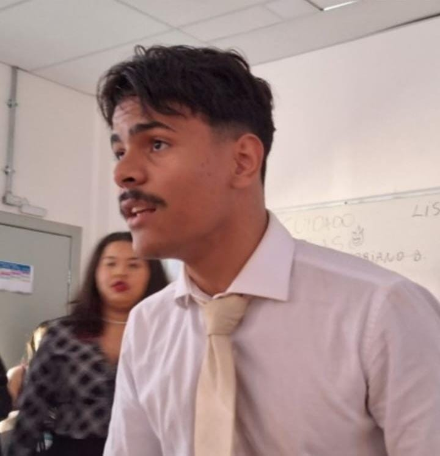

Thierry Uceli
Desenvolvedor | Estudante de Computação

Apaixonado por tecnologia, atualmente cursando Ciências da Computação na UVV
Informações Pessoais
- Email: thierrysuceli2l@gmail.com
- Telefone: (27) 99999-9999
- Cidade: Vitória - ES
Formação Acadêmica
Ciências da Computação - Universidade UVV (2025 - atual)
Experiência
CEO da Apple(1890 - 1999) e fundador da spacex
Habilidades
- Lógica de programação
- HTML e CSS
- Comunicação
- Trabalho em equipe